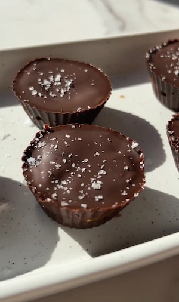

Homemade Reese's Peanut Butter Cups (Healthy, 3 Ingredients) (3 ingredients, no oven, dangerously good)
if you're a Reese's lover, these three ingredient homemade reese's peanut butter cups are about to become a permanent fixture in your freezer. All you need is…peanut butter, dates, dark chocolate. that's really it. no oven, no baking, no tempering chocolate just a food processor and about 15 minutes of your time. they taste so close to a Reese's cup that i genuinely cannot... i really can't get over how good they are every single time i make them and how simple they are!
The dates are the only sweetener in this recipe but medjool dates are also naturally rich in fibre, potassium and antioxidants, and they have real anti-inflammatory properties which makes them one of my favourite wholefood sweeteners to bake with. which i love because it means we get added nutrients from our sweetener. when blended with peanut butter, they create this smooth, slightly sticky, fudgy filling that is almost unsettlingly close to the inside of a Reese's cup. the key here is using soft, fresh dates. if yours feel dry or a little hard, soak them in hot water for 10 minutes and pat dry before blending and they'll soften right up and blend much more smoothly.
The peanut butter adds that creamy richness and classic nutty flavour that makes the Reese's comparison so spot on. it's also a great source of healthy fats, plant-based protein, and magnesium, so while these feel like a proper indulgent treat (and they are), there's also some real nutritional value happening underneath. use a natural peanut butter with no added sugar or palm oil for the cleanest version of the recipe. The ingredient list should just be peanuts and sometimes a lil salt too! runny peanut butter blends much more easily with the dates and gives you a smoother filling, so if yours is thick give it a good stir before adding it to the food processor. You can also opt for a crunchy peanut butter which will give you a few chunks of peanuts throughout the batter for added crunch.
the dark chocolate is the final ingredient and it super charges the antioxidant and anti-inflammatory aspect of this recipe. dark chocolate at 70% and above is packed with flavonoids, which are plant compounds with powerful antioxidant and anti-inflammatory properties. i use a 70 to 85% dark chocolate for these cups because it's rich and slightly bitter in the best way, and it balances the sweetness of the dates perfectly. if you find very dark chocolate too intense, a 60 to 70% works just as well and will be a little sweeter overall. You can also substitute the dark chocolate for milk chocolate if preferred but the nutrition benefits will be lower.
the method is super simple. blend the dates and peanut butter in a food processor until you get a smooth, sticky dough. melt the dark chocolate and add a spoonful to the base of each mini cupcake mold, then pop it in the freezer for about five minutes to set while you roll the filling into balls. press a ball into each mold, top with more melted chocolate, and back into the freezer until fully set. the whole thing takes about 15 minutes of active time and the freezer does the rest. don't skip the flaky salt sprinkle on top because the salty-sweet combination is just divine and it looks so cute too.
these are best enjoyed cold or after sitting at room temperature for about five minutes if you like them slightly softer and more fudgy. they keep really well in an airtight container in the freezer for up to a month, which makes this such a great batch recipe to have on hand for whenever a chocolate craving hits. I love doubling or tripling (lol) the recipe so i always have some in my freezer at all times.
if you love a no bake chocolate fix, you also have to try my viral 4 ingredient brownie batter bars. They are super rich and indulgent but made with intentional ingredients!
Frequently Asked Questions
How long do these peanut butter chocolate cups keep and how should I store them?
Store in an airtight container in the freezer for up to one month. They can also be kept in the fridge for up to a week, though they'll be softer and more fudgy at fridge temperature. Serve straight from the freezer or leave at room temperature for five minutes if you prefer a slightly softer texture.
What type of dates work best for desserts?
Medjool dates are the best choice here because they're naturally soft, large, and have an almost caramel-like sweetness that blends into a really smooth filling. If your medjool dates feel dry or stiff, soak them in warm water for 10 minutes and pat them dry before blending. Deglet noor dates will work in a pinch but they're smaller and drier, so the filling may be less creamy and you may need to add more dates as you go.
Can I make these reese's peanut butter chocolate cups without a food processor?
A food processor really is the best tool for this recipe because it gets the dates and peanut butter to a smooth, cohesive dough. If you don't have one, a high powered blender can work but you may need to stop and scrape down the sides a few times.
Are these peanut butter chocolate cups vegan?
Yes, as long as you use a dairy-free dark chocolate they are completely vegan. Most dark chocolate at 70% and above is naturally dairy free but always check the label to be sure, especially if you need to avoid cross contamination.
Are these homemade reese's peanut butter cups gluten free?
Yes! All three ingredients are naturally gluten free. Just double check the label on your chocolate and peanut butter to make sure there's no cross contamination if you have coeliac disease or high sensitivity.
Why is my filling too sticky to roll into balls?
The filling is meant to be sticky but if you can't roll it into balls then this usually comes down to the dates being very moist or the peanut butter being very runny. Pop the blended mixture into the fridge for 15 to 20 minutes to firm up before rolling and it should be much easier to handle. Lightly dampening your hands when rolling can also help stop the mixture sticking to your fingers. If that doesn't help you can add in an extra tablespoon of peanut butter and mix until the texture is easier to handle.
What percentage dark chocolate should I use in baking?
Anything from 60% upwards works well. I prefer 70 to 85% because it's rich and slightly bitter in a way that balances the sweetness of the dates really well, and it has the highest flavonoid content for the anti-inflammatory benefits. If you find very dark chocolate too intense, 60 to 70% is a little sweeter and still gives you a great result.
What can I substitute peanut butter for?
You can technically sub the peanut butter for any nut or seed butter and the recipe will work but this will completely change the flavour and they will no longer be peanut butter chocolate cups. However, it's a great option if you would like to try these cups but are allergic to peanuts.
Pro Tips
- Use soft, fresh medjool dates for the smoothest filling. If yours feel dry or stiff, soak them in hot water for 10 minutes and pat dry before blending.
- Sprinkle flaky salt on top — the salty-sweet combination is divine and it looks gorgeous.
- Use a silicone mold for best results. The cups pop out easily without cracking the chocolate.
- Opt for a natural peanut butter with no added sugar or palm oil — the ingredient list should just be peanuts (and maybe a little salt).
Homemade Reese's Peanut Butter Cups (Healthy, 3 Ingredients)

Ingredients
Instructions
- Step 1: Add the peanut butter and dates to a food processor and blend until smooth and combined into a sticky dough.
- Step 2: Melt the dark chocolate.
- Step 3: Add a spoonful of melted chocolate to the base of each mini cupcake mold and place in the freezer for 5 minutes until set.
- Step 4: Roll the peanut butter and date mixture into small balls and press one firmly into each mold.
- Step 5: Top with more melted chocolate and sprinkle with flaky salt.
- Step 6: Place in the freezer until fully set.
- Step 7: Pop out of the molds and enjoy!
Nutrition Facts
Per one cup (based on 6 cups):
*Nutritional information is estimated and will vary depending on the ingredients and brands you use. Basic macros don't reflect the full nutritional value including vitamins, minerals, antioxidants, and other beneficial compounds. Please use this as a guideline only.